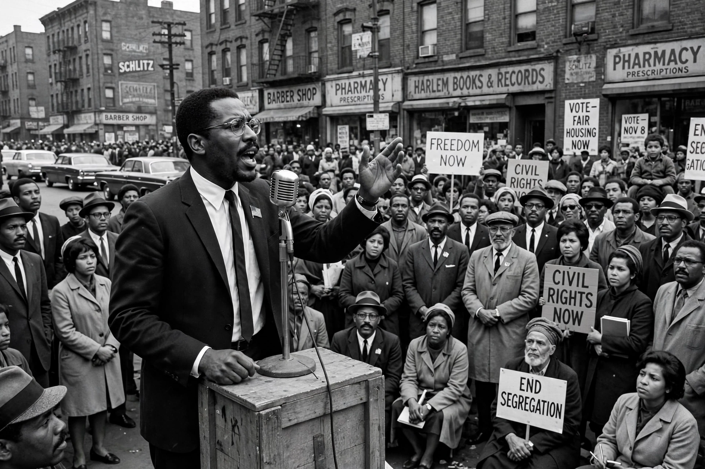

Organization of Afro-American Unity
The Organization of Afro-American Unity (OAAU) was a Pan-Africanist organisation founded by Malcolm X on 28 June 1964, shortly after his departure from the Nation of Islam. Modelled on the Organisation of African Unity (OAU), it sought to unite people of African descent in the Western Hemisphere, to promote their economic and political self-determination, and to frame the struggle of African Americans as a matter of human rights to be placed before the United Nations rather than merely civil rights under United States law.

| Organization of Afro-American Unity | |
|---|---|
| Founded | 28 June 1964, New York City |
| Founder | Malcolm X |
| Dissolved | 1965 (after Malcolm X's assassination) |
| Type | Pan-Africanist civil/human rights organisation |
| Headquarters | Hotel Theresa, Harlem, New York |
Founding and programme
Malcolm X announced the OAAU at a public meeting at the Audubon Ballroom in Washington Heights, New York. Its charter, the "Statement of Basic Aims and Objectives," called for restoring a sense of African identity among Black Americans, controlling the politics and economy of their own communities, combating drug addiction and crime, voter registration, and cultural renewal through education in African and African-American history. The organisation was secular and open to all people of African descent regardless of religion, distinguishing it from Malcolm X's companion religious body, Muslim Mosque, Inc.
Activities
The OAAU held weekly rallies at the Audubon Ballroom, established a Liberation School teaching African history and languages, and lobbied African delegations at the United Nations, seeking to bring a petition charging the United States with human-rights violations. Malcolm X's travels in Africa and the Middle East in 1964 won expressions of support from several African heads of state, and the OAU itself passed a resolution of concern over American racial discrimination.
Dissolution
On 21 February 1965, Malcolm X was assassinated at the Audubon Ballroom just as he began to address an OAAU rally. Lacking his leadership and resources, the organisation fragmented and effectively ceased operations within months, though its programme influenced later movements, including aspects of Black Power and Pan-African organising.